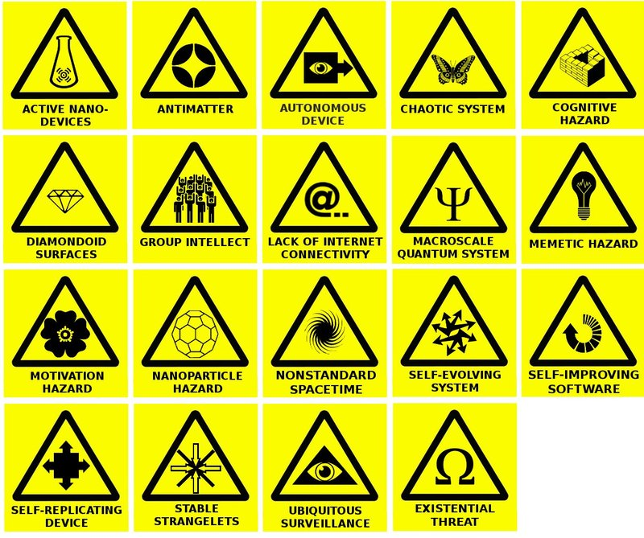

Warning Signs From the Future

This is our scary future, and unfortunately mankind is crawling towards it.
We go forward with complete confidence in the eventual triumph of freedom. Not because history runs on the wheels of inevitability; it is human choices that move events. Not because we consider ourselves a chosen nation; God moves and chooses as He wills. We have confidence because freedom is the permanent hope of mankind. When our Founders declared a new order of the ages; when soldiers died in wave upon wave for a union based on liberty; when citizens marched in peaceful outrage under the banner “Freedom Now” — they were acting on an ancient hope that is meant to be fulfilled. History has an ebb and flow of justice, but history also has a visible direction, set by liberty and the Author of Liberty. —US Presidential Inaugural Address, 2005
Genius is eternal patience. The greater danger for most of us lies not in setting our aim too high and falling short; but in setting our aim too low, and achieving our mark. The true work of art is but a shadow of the Divine perfection. —Michelangelo
Most of the things worth doing in the world had been declared impossible before they were done. —Louis Brandeis, US Supreme Court Justice
We have only one alternative: either to build a functioning industrial society or see freedom itself disappear in anarchy and tyranny. —Peter Drucker
The mind is not a vessel to be filled but a fire to be kindled. —Plutarch